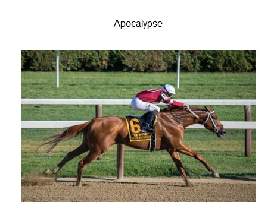
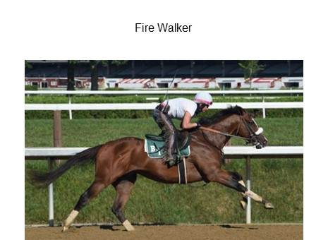
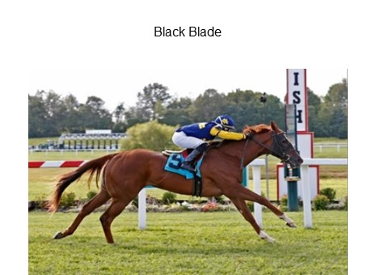

<!DOCTYPE html>
<html>
  <head>
    <script src="https://unpkg.com/jspsych@7.3.3"></script>
    <script src="https://unpkg.com/@jspsych/plugin-call-function@1.1.2"></script>
    <script src="https://unpkg.com/@jspsych/plugin-survey-text"></script>
    <script src="https://unpkg.com/@jspsych/plugin-survey-html-form@1.0.1"></script>
    <script src="https://unpkg.com/@jspsych/plugin-preload"></script>
    <script src="https://unpkg.com/@jspsych/plugin-html-button-response@1.1.2"></script>
    <script src="https://unpkg.com/@jspsych/plugin-audio-keyboard-response@1.1.2"></script>
    <script src="https://unpkg.com/@jspsych/plugin-audio-button-response@1.1.2"></script>
    <script src="./create-new-plugin/plugin-audio-survey-input-response.js"></script>

    <link href="https://unpkg.com/jspsych@7.3.3/css/jspsych.css" rel="stylesheet" type="text/css" />
  </head>
  <body></body>
  <script>
    /* initialize jsPsych */
    var jsPsych = initJsPsych({
      on_finish: function() {
        jsPsych.data.displayData();
      }
    });

    var timeline = [];


    // need this for the time being until we include all consent forms etc.
    var before_audio = {
        type: jsPsychHtmlButtonResponse,
        stimulus: 'Click to start',
        choices: ['OK']
    }
    timeline.push(before_audio);

    // issue with this one: any response will jump to the next one. using user input in the prompt doesn't save the responses. 
    // so still the best way to go is with survey-html
    // either modify the plug in so it can also take sound
    // but the next issue is to prevent participants from clicking the button until all audios have been listened to (kenny smith's student's modified plug)

    var bet = {
        type: jsPsychAudioSurveyInputResponse,
        stimulus: "critical_apocalypse_native_disfluent.mp3",
        preamble: `<div class="image-gallery">
            
            
            
            <div class="clear"></div>
            </div>`,
        html: `<p> Place your bets on <input name="first" type="text" />, <input name="second" type="text" /></p>`
    }

    timeline.push(bet);

    jsPsych.run(timeline);
  </script>
</html>